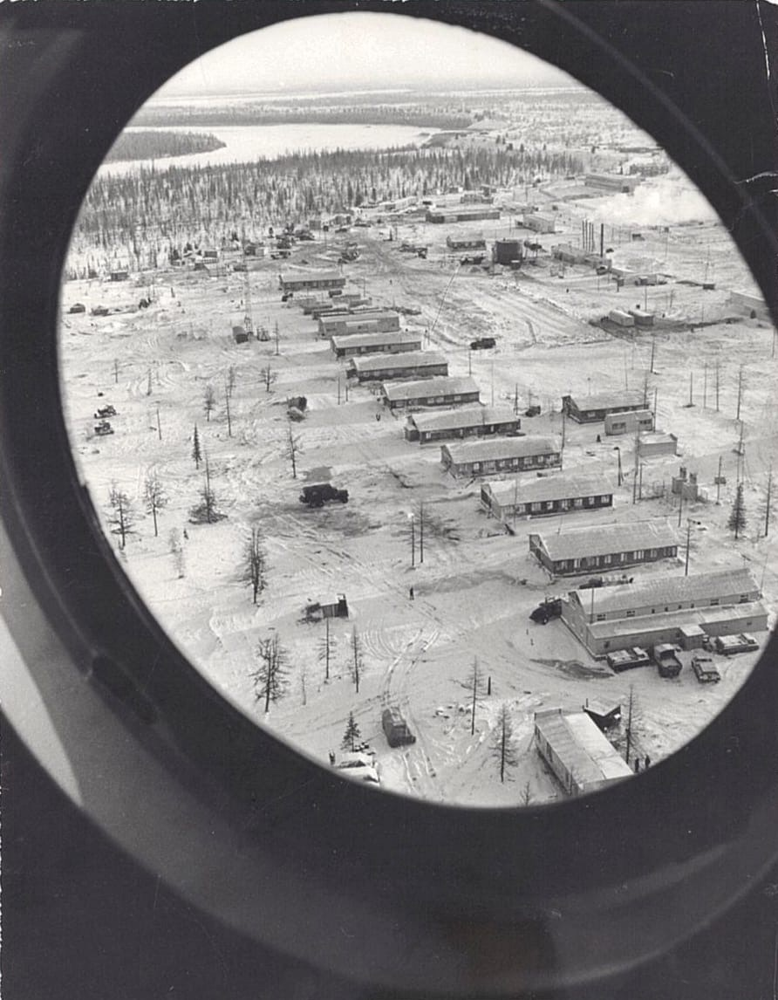
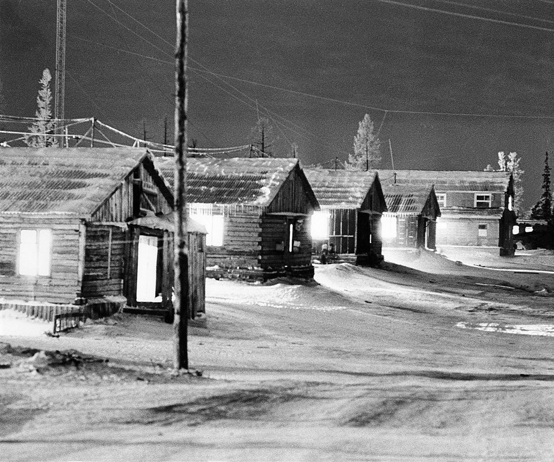
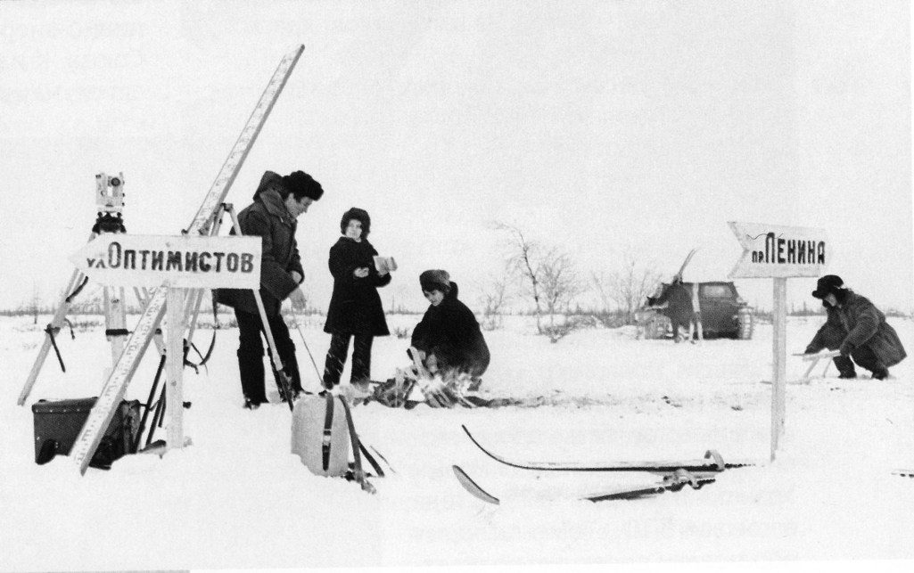
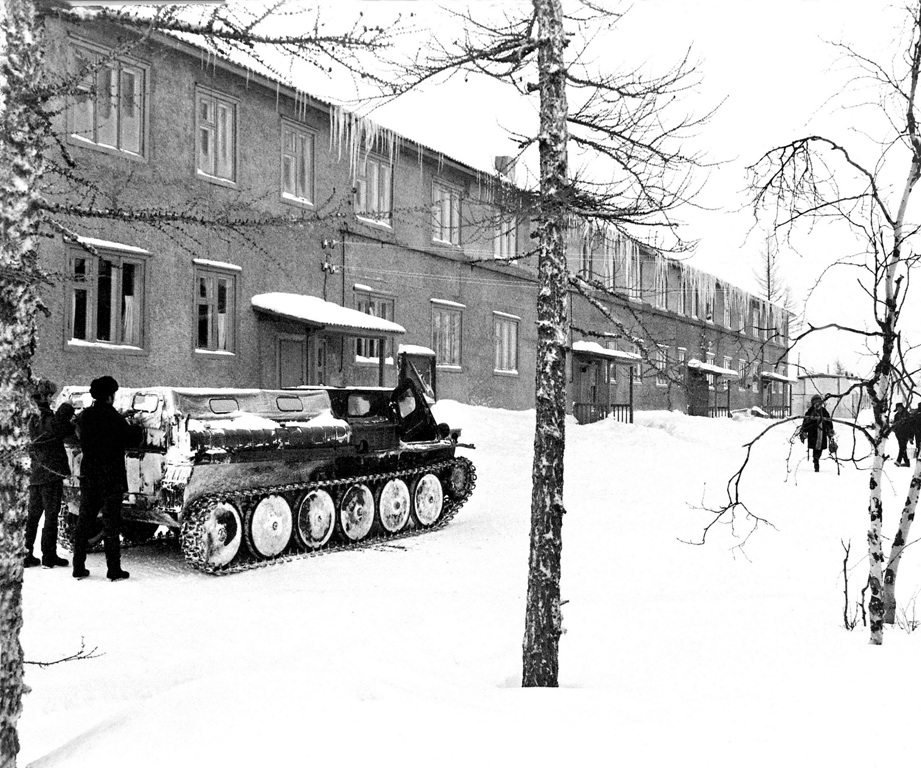
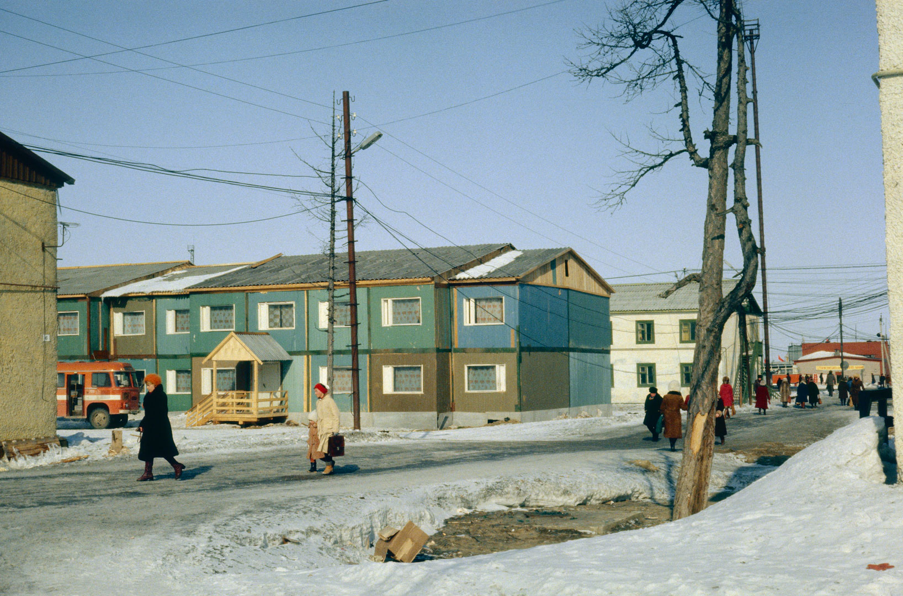
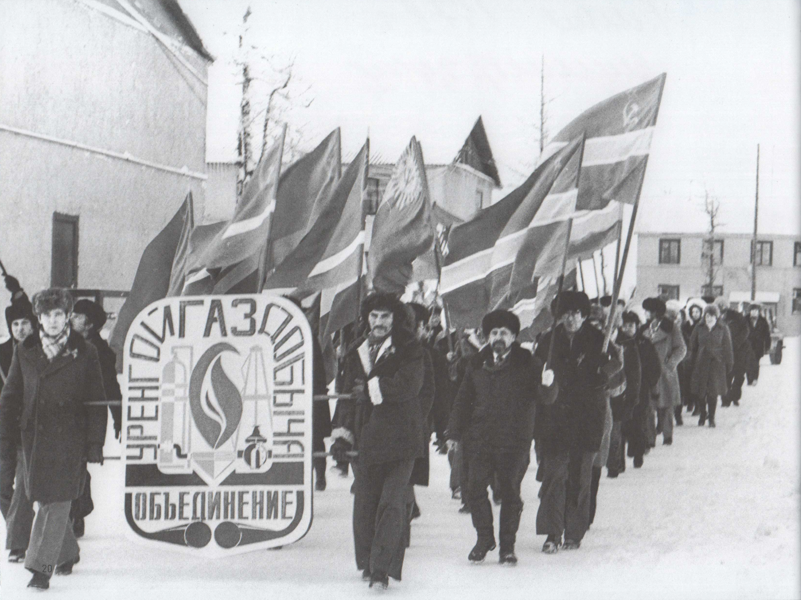

улица слева от дома-флага

Названия улиц, как хорошая книга по краеведению, могут многое рассказать о важных для города вопросах: об этапах его развития или о ключевых исторических личностях.
Не зря же самая первая улица города, которая появилась на карте в 1973 году, носила имя Оптимистов. Кто, как не оптимисты, могли рассчитывать построить город в столь суровых условиях, как наш Крайний Север? И не ошиблись же.
К сожалению, эта улица не сохранилась. Была перестроена в ходе развития города. Однако память о ней все равно жива. В честь оптимистов, веривших в будущее Нового Уренгоя, назван микрорайон в южной части города.

Наверное, каждый, кто хоть немного занимался историей Нового Уренгоя, встречал фотографию 1978 года, на которой запечатлена группа маркшейдеров за работой.

Самое интересное в этой фотографии – указатели улиц: ул. Оптимистов и пр. Ленина. Может возникнуть вполне логичный вопрос: «Вторая улица города тоже не сохранилась?»
На самом деле, эта фотография является постановочной. Нужно было сделать снимок для журнала «Советский Союз» о трудовых буднях покорителей Севера. Как вспоминает Людмила Гордеева, первый маркшейдер-женщина Нового Уренгоя, всё было сделано для красоты кадра и пропорциональности художественной композиции. Кто же тогда мог предположить, что в городе газодобытчиков и строителей не будет улицы имени вождя мирового пролетариата?
Настоящей же второй улицей Нового Уренгоя является ул. Первопроходцев. И несмотря на то, что она младше первой всего лишь на год, она дошла до наших дней.
Уже летом 1974 года здесь были возведены несколько деревянных домов. Времени и материалов на строительство даже деревянных домов очень не хватало. Поэтому для вновь приезжающих на ул. Первопроходцев собирали палатки.
И только во второй половине 1970-х годов здесь стали появляться привычные нашему глазу БАМовские дома. Например, дом №3 был сдан в 1976 году, а дом №6 – в 1981 году.
Вернёмся к вопросу топонимики. Освоение Тюменского Севера в 1960-70 годах было крайне непростым делом. Сам регион с его низкими температурами и болотистой местностью требовал находить новые решения даже для обычных задач. Люди, приезжавшие на эту землю, были пионерами в своих областях. Причем абсолютно во всех областях, начиная геологией и газодобычей и заканчивая, казалось бы, уже давно известными строительством и снабжением. Именно в честь этих первопроходцев и была названа улица.
Одной из основных проблем БАМовских домов является их низкая огнеупорность. Попросту говоря, они быстро горят. Так в 2015 году от огня пострадал дом №1. А 2 декабря 2018 года полностью сгорел дом №3.

Забавная ситуация произошла с домом №4. Когда видишь его впервые, неясно, почему он почти в 2 раза короче других деревянных домов. Причина тому – огонь. В свое время дом тоже горел. Но полдома все же удалось спасти. А так как с квадратными метрами в Новом Уренгоя проблема была всегда, то уцелевшая половина используется и по сей день.

Другой особенностью БАМовских домов является тот факт, что это временное жилье. Именно по причине аварийности в январе 2021 года был разобран дом №6.
Итого на сегодняшний день на ул. Первопроходцев осталось только два дома: №2 и №4. Определенно в будущем она будет застроена современными и удобными домами. «Исторической» застройки на ней не останется (что, наверное, к лучшему). Однако, несмотря на все изменения, сама улица на карте города осталась.

{kind=link}
{kind=link}
{kind=link}
{kind=link}
{kind=link}
{kind=link}
{kind=link}
{kind=link}
{kind=link}
{kind=link}